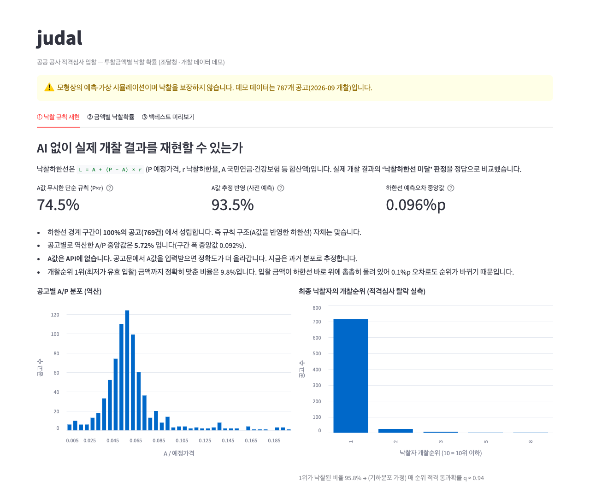
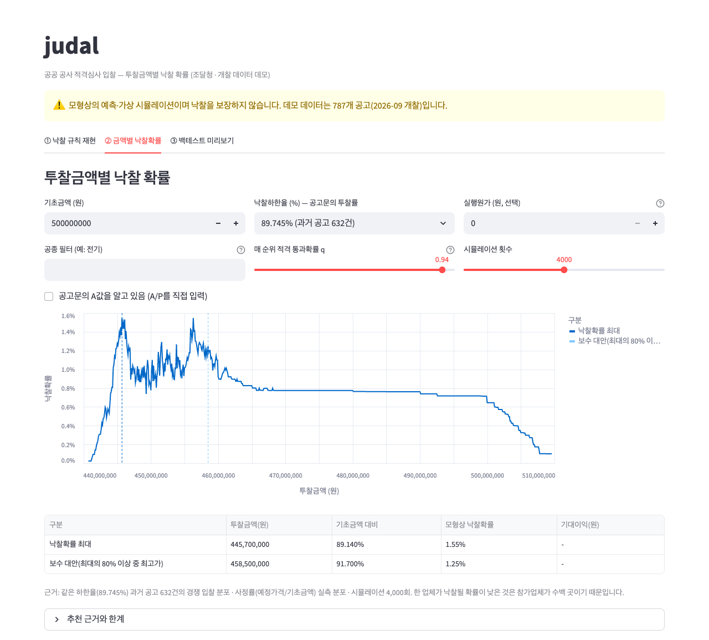
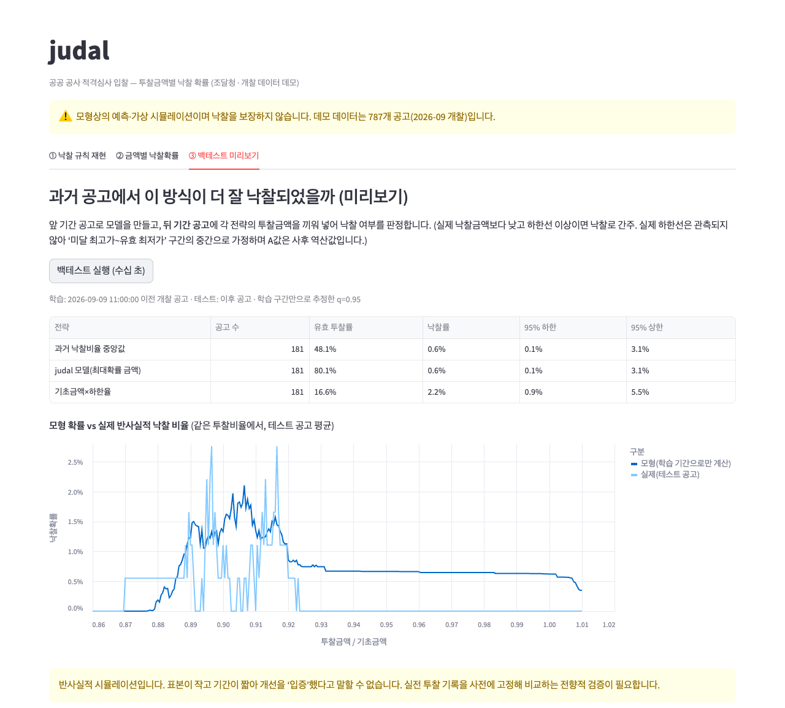

judal
공공 공사 적격심사 입찰 — 투찰금액별 낙찰 확률 분석 (개발 중인 데모)
현재 개발·검증 단계의 데모입니다. 화면의 수치는 과거 공개 데이터를 이용한 모형상 예측·가상 시뮬레이션이며 낙찰을 보장하지 않습니다. 외부 이용자에게 제공되는 서비스가 아닙니다.
무엇을 하나요
공사 적격심사 입찰은 예정가격이 추첨으로 정해지고 참가업체가 수백 곳에 이릅니다. judal은 나라장터의 공개 입찰 데이터를 분석해, 업체가 투찰금액을 정할 때 참고할 수 있는 근거를 제공하는 것을 목표로 합니다.
- 낙찰 규칙 재현 — 낙찰하한선 규칙을 코드로 구현해 실제 개찰 결과와 비교합니다.
- 금액별 낙찰확률 — 경쟁 입찰 분포와 사정률 분포로 몬테카를로 시뮬레이션을 수행합니다.
- 백테스트 — 과거 공고로 방식의 성능을 시간순으로 검증하고, 한계를 함께 표시합니다.
- 공고 선별(연구 중) — 투찰 전 공고 정보로 경쟁 강도(참가업체 수)를 예측합니다.
화면



사용 데이터
| 출처 | 공공데이터포털 · 조달청 나라장터 입찰공고정보서비스, 낙찰정보서비스, 계약정보서비스, 사용자정보서비스(OpenAPI) |
|---|---|
| 범위(데모) | 2026-09-01 ~ 09-15 개찰된 공사 공고 787건 (복수예가, 적격심사) |
| 개인정보 | 수집하지 않으며 법인 단위 공개 정보만 사용합니다. |
원칙
- 검증되지 않은 성능은 주장하지 않습니다. 사용한 데이터, 가정, 한계를 결과와 함께 표시합니다.
- 개찰 후에만 알 수 있는 값은 입력으로 쓰지 않습니다(시점 누수 방지).
- 입찰 담합이나 비공개 정보 확보를 목적으로 하지 않습니다.